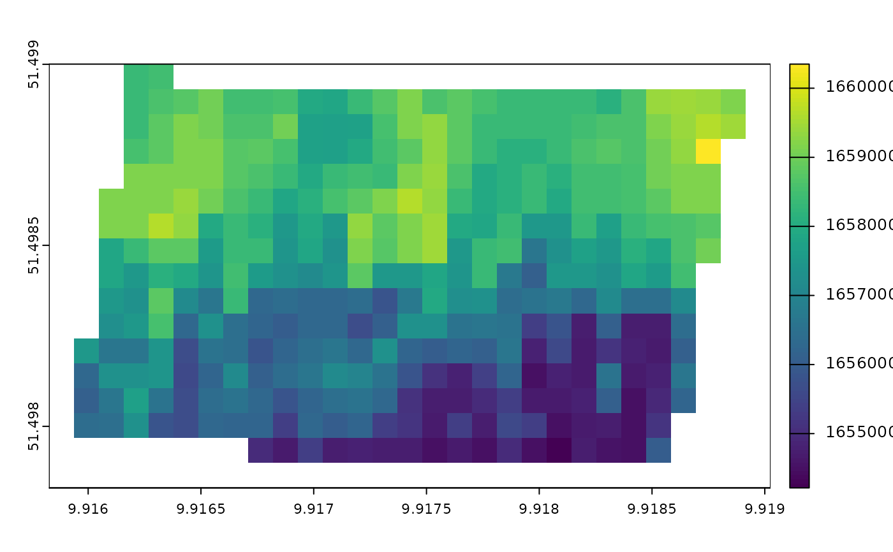

Calculate epidemic onset from image
Source:R/calc_epidemic_onset_from_image.R
calc_epidemic_onset_from_image.RdCalculate epidemic onset from image
Arguments
- start
POSIXct, start date in which to begin calculating the epidemic onset, if not specified, the first date in the weather data will be used.
- end
POSIXct, end date, last date to complete calculating the epidemic onset, if not specified, the last date in the weather data will be used.
- c_closure
map of canopy closure dates formatted as number of days since 1970-01-01. It defines the date to start running the model (Wolf)
- weather
data.table, formatted with
format_weather- cultivar_sus
character, susceptibility of the cultivar in "R" resistant, "S" susceptible, "MR" moderately resistant etc.
Value
If the input weather is conducive for epidemic, the function returns a POSIX_ct date when epidemic commences. If no epidemic occurs, a numeric, proportion indicating the progress an epidemic is returned
Examples
wethr <- read.csv(system.file("extdata", "clean_weather.csv",
package = "cercospoRa"))
wethr <- format_weather(wethr,time_zone = "UTC")
img_dir <- system.file("extdata", "uav_img",package = "cercospoRa")
epidemic_onset_param <-
read_sb_growth_parameter(
list.files(img_dir,pattern = "tif",
full.names = TRUE),
img_dates = as.POSIXct(c("2022-06-14","2022-06-28"),
tz = "UTC"),
10)
param_rxt <- calc_r_x0(epidemic_onset_param,
min_r = 0.02,
max_r = 0.05,
k = 6)
c_closure <- calc_c_closure(param_rxt,
x1 = 1.3,
k=6 )
# this takes about 20 sec to run
epidemic_onset_map <- calc_epidemic_onset_from_image(start = as.POSIXct("2022-04-25",tz = "UTC"),
end = as.POSIXct("2022-09-30",tz = "UTC"),
c_closure = c_closure,
weather = wethr)
terra::plot(epidemic_onset_map)
